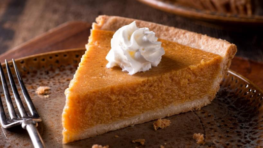

Homemade Fresh Pumpkin Pie

This homenade pumpkin pie made with mashed, cooked pumpkin is my family's favorite. Skip yhe canned pumpkin and
store-bought crust and make your holiday pumpkin pie from scratch with a flaky homenade pastry crust and
deliously spiced pumpkin filling. Hope you enjoy it as much as my family does!
Submitted by Randy Scott
Prep Time:
20 mins
Cook Time:
40 mins
Tota Time:
1 hr
Servings:
8
Yield:
1 (9-inch) pie
Ingredients
Pastry Crust:
- 1 1⁄3 cups all-purpose flour
- 1⁄2 teaspoon salt
- 1⁄2 cup cold butter or shortening
- 3 tablespoons cold water, or more as needed
Filling
- 2 cups mashed, cooked pie pumpkin
- 1 (12 fluid ounce) can evaporated milk
- 2 large eggs, beaten
- 3⁄4 cup packed brown sugar
- 1⁄2 teaspoon ground cinnamon, or more to taste
- 1⁄2 teaspoon ground ginger, or more to taste
- 1⁄2 teaspoon ground nutmeg, or more to taste
- 1⁄2 teaspoon salt
Directions
- Preheat the oven to 400 degrees F (200 degrees C)
- To make the pastry crust. Mix flour and salt together in a bowl. Cut in butter with a pasty blender until
mixture resembles coarse crumbs. mix 3 tablespoon water, one at a time, until dough is moist enough to
hold together. Add up to 1 more tablespoon water if needed.
- Shape dough into a ball with lightly floured hands. Rool dough on a lightly floured surface to a thickness
of 1/8 inches larger. Plac a 9-inch pie pan upside-down on the dough; use a sharp knife to cut a circle
of dough 1 1⁄2 inches larger than the pie pan. Remove and discatd dough scraps and set pie pan aside.
- Gently roll circular oiece of dough around the rolling pin; transfer it right-side up over the pie pan.
Unroll, easing dough into the bottom of the pan. use two hands to flute the dough around the top edges.
- To make the filling: beat pumpkin, evapored milk, brown suggar, eggs, cinnamon, ginger, nutmeg, and salt
in a large bowl with an electric mixer until well combined. Pour into prepared crust.
- Blake in the preheated oven until a knife inserted into filling 1 inch from the edge comes out clean, 40
to 60 minutes. Cover the edges with foil if needed to prevent from burning as the filling cooks.
- Remove from oven and cool to room temperature before serving.
To prepare Mashed Pumpkin:
Cut a fresh pie pumpkin in half. Scoop out and discards seeds and stringty potions. Leave skin on and cut
pumpkin into chunks. Measure out 1 1⁄2 pounds for this recipe to yield 2 cups of mashed, cooked pumpkin. If
your pumpkinis larger, consider cooking 3 pounds and doubling the pie recipe above to make two pies.
Place pumpkin chunks in saucepan over medium heat with 1 inch water; bring to a boil. Reduce the heat to low,
cove, and simmer until tenter, about 30 minutes. Drain and cool. Remove and discard peel. Return pumpkinto
saucepan and mash with a potato masher or use a food mill until smooth.
Nutrition Facts
363 Calories
18g Fat
44g Carbs
7g Protein
To see more photos Click here